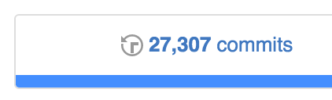
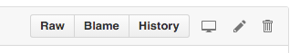
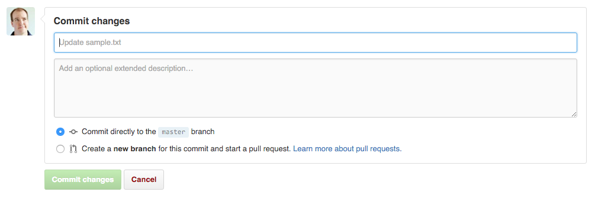

04 Teach : Team Activity
Practice with Git
Objectives
Practice using git.
Learn how to fix problems with git.
Assignment
Before continuing, you should have completed this week's preparation assignment.
You're going to practice using git to track changes to simple text files.
Part I: Creating, Committing and Pushing Changes
-
Open the command line and navigate to a directory where you'd like to work. Use the
git clonecommand to create a local copy of the repository you created on GitHub during the preparation assignment.You can find the URL used to clone your respository on github. For example, if your GitHub name is l33tcoder, and your repository name is pacman, the command to clone your repsoitory would be:
git clone https://github.com/l33tcoder/pacman.gitYou will now have a directory called <your repository name> in your current directory.
-
Using your favorite text editor, create a text file called sample.txt write a short message in it, and save it to the repository directory.
-
Next, change directories to your git repository directory and use the
git statuscommand to view the current status of your repository. The sample.txt file will appear in the list of untracked files. This means it hasn't bee added to the git repository yet.cd <your repository name> git status -
Next, use the
git addcommand to add this file to the next commit:git add sample.txtIf you rerun the
git statuscommand, you'll see that sample.txt now appears in the list of changes to be committed. -
To commit your changes, execute the
git commitcommand, providing a message describing your changes:git commit -m "Added the best file ever." -
Now, to push your changes up to the copy of the repository on GitHub, execute the
git pushcommand.git push -
Reload your repository page on GitHub, and verify that your new file is listed there.
-
On the repository webpage, click the link showing your commit history:
This will show you a list of all the commits you have pushed to the repository.
Congratulations! You now know how to add, commit, and push changes from your local repository to the central repository on GitHub.
Part II: Pulling Changes
Often when using version control systems like GitHub, you're working with a team of other developers who will be making changes to the code as well. As they push their changes to the central repository, you need to pull those changes to your local copy, so that you can stay in sync with what everyone else is doing.
We're going to use GitHub's direct editor to simulate that process now. Normally, we don't edit files directly in GitHub, but we'll do that here in order to simulate another developer pushing a commit to the central repository.
-
Open up your repository page on GitHub and click on the sample.txt file that you added in Part I.
-
Click on the pencil icon on the right side of the screen, which will allow you to edit the file directly in GitHub.
 -
Change the text in the file, then at the bottom of the screen enter a commit message in the first field of the Commit Changes box. Then, Click the Commit Changes button at the bottom of the screen.
 -
If you click on the commit history icon again, you should now see your commit from part one, along with the commit you just made.
We're pretending that this new commit came from another developer, who made changes in their local repository, then pushed those changes to the central repository on GitHub.
-
Now you need to use the
git pullcommand to pull the changes from the central repository to your local copy:git pull -
View the contents of the sample.txt file on your computer, and you should see the updated version.
Congratulations! You now know how to pull changes from GitHub to your local repository.
🌟Stretch Challenge🌟
When multiple developers try to change the same files at the same time, this can result in what is called a merge conflict. By default, git is pretty good at merging changes during pulls and pushes. Sometimes however, it can't figure out the best choice, and so it leaves it up to you.
We're going to use GitHub's direct editor to simulate a merge conflict.
-
Just like we did in Part II, open up GitHub and modify the text in the sample.txt file, making sure you commit the changes.
Verify that the new changes show up in the commit history on GitHub, but don't pull those changes to your local repository yet.
-
Now, open sample.txt on your computer, and modify the same line of text that you modified in step 1, but change it to something different.
-
Add sample.txt to the commit by using
git add, then commit the changes usinggit commit:git add sample.txt git commit -m "Made the best changes ever." -
Now, attempt to push your changes to GitHub using the
git pushcommand. Observe how it fails with an error:! [rejected] master -> master (fetch first) error: failed to push some refs to ... hint: Updates were rejected because the remote contains work that you do hint: not have locally. This is usually caused by another repository pushing hint: to the same ref. You may want to first integrate the remote changes hint: (e.g., 'git pull ...') before pushing again. hint: See the 'Note about fast-forwards' in 'git push --help' for details.Remember, one of the fundamental rules of using git is:
Always pull before you push.
-
Attempt to fix this problem by executing
git pull. This will also fail:CONFLICT (content): Merge conflict in sample.txt Failed to merge in the changes. ... When you have resolved this problem, run "git rebase --continue". -
If you open sample.txt now, you will see something like the following:
<<<<<<< fa3f0f0d0dc7834b799af3e4f8a0cf21dd033ff6 Hello World!!! ======= Goodbye World! >>>>>>> GoodbyeThe part above the line of equal signs shows you the version of the code you're trying to pull down from the central repository.
The part below the line of equal signs shows the version of the code that is in your local repository. Since these lines dont match, git is unable to merge the changes, and a conflict results.
-
To resolve this conflict, choose the version you want to keep, and delete the other version, along with the merge markers. So if you want to keep your version, you'd delete the line of > symbols, and everything above the equal signs. In the above example, you'd end up with:
Goodbye World! -
Once you have resolved the conflict, you need to tell git to continue with the merge. To do this, we tell git that we have finished fixing sample.txt, then tell it to continue with the merging:
git add sample.txt git rebase --continueIf all went well, we should see a message from git telling us that it is applying our version of the commit.
-
As a final step, we use
git pushto send our merged changes back to the central repository.
Congratulations! You now know how to resolve simple merge conflicts using git.
Make sure everyone on your team understands and receives a copy of this code.
Be sure to complete the accompanying quiz for this assignment on I-Learn.